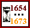

LES �UVRES DE MOLIERE
SELON LES DATES DE LEUR REPRESENTATION

Classement
chronologique
Classement
alphab�tique
TH�ATRE
La Jalousie du Barbouill�
?
Le M�decin volant
?
L'�tourdi
Fin 1654
Le D�pit amoureux
16 d�cembre 1656
Les Pr�cieuses ridicules
18 novembre 1659
Sganarelle ou le Cocu imaginaire
28 mai 1660
Dom Garcie de Navarre
4 f�vrier 1661
L'�cole des maris
24 juin 1661
Les F�cheux
17 ao�t 1661
L'Ecole des femmes
26 d�cembre 1662
La Critique de L'�cole des femmes
1er juin 1663
L'Impromptu de Versailles
14 Octobre 1663
Le Mariage forc�
29 janvier 1664
La Princesse d'�lide
8 mai 1664
Le Tartuffe
12 mai 1664
Dom Juan
15 f�vrier 1665
L'Amour M�decin
15 septembre 1665
Le Misanthrope
4 juin 1666
Le M�decin malgr� lui
6 ao�t 1666
M�licerte
2 D�cembre1666
Pastorale comique
5 janvier 1667
Le Sicilien ou l'Amour peintre
14 F�vrier 1667
Amphitryon
13 janvier 1668
George Dandin
18 juillet 1668
L'Avare
9 septembre 1668
Monsieur de Pourceaugnac
6 octobre 1669
Les Amants magnifiques
4 f�vrier 1670
Le Bourgeois gentilhomme
14 octobre 1670
Psych�
17 janvier 1671
Les Fourberies de Scapin
24 mai 1671
La Comtesse d'Escarbagnas
2 d�cembre 1671
Les Femmes savantes
11 mars 1672
Le Malade imaginaire
10 f�vrier 1673
�UVRES DIVERSES
Remerciement au Roi
Les Plaisirs de l'Ile enchant�e
Pr�face de l'�dition de 1682
Ballet des Incompatibles
Ballet des Muses
La Gloire du Val-de-Gr�ce
Po�sies diverses